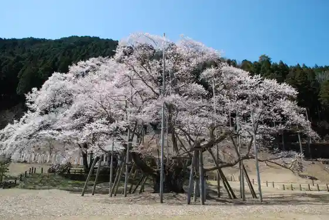
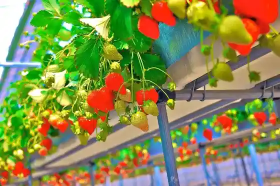
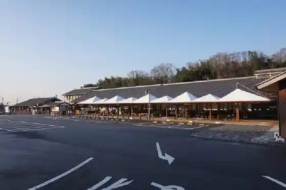

Tarumi Tetsudo
Motosu, Gifu · 0581-34-8039 · Official / source link
Neo Tani Usuzumi Zakura
Motosu, Gifu · 0581-34-3988 · Official / source link

Tsumitsumiichigo Farm
Motosu, Gifu · 0581-34-4831 · Official / source link

Roadside Station Oribe no Sato Motosu
Motosu, Gifu · 0581-34-4755 · Official / source link

Mushiroda Yosui no Hotaru
Motosu, Gifu · Official / source link
no Sato Hakusan
Motosu, Gifu · 0581-34-3988 · Official / source link
Monju no Mori Park
Motosu, Gifu · 0581-34-4505 · Official / source link
Roadside Station Usuzumi Sakura no Sato Neo
Motosu, Gifu · 0581-38-3430 · Official / source link
Roadside Station Fuyu Kaki no Sato Itonuki
Motosu, Gifu · 058-323-7389058-323-7756 · Official / source link
Jishin Danso Kansatsu Kan
Motosu, Gifu · 0581-38-3560 · Official / source link
Oribe Tenjikan
Motosu, Gifu · 0581-34-4755 · Official / source link
Himaraya NEO Kyanpingu Park
Motosu, Gifu · 058-276-7188 · Official / source link
Yamaguchi Castle Ruins
Motosu, Gifu · 0581-34-3988 · Official / source link
Yasuragi no Hayashi no Higan Hana
Motosu, Gifu · 0581-34-3988 · Official / source link
Ayu Ryori Yana Kawa
Motosu, Gifu · 0581-32-5260 · Official / source link
Kamebuchi Oto Campground
Motosu, Gifu · 090-7318-2348 · Official / source link